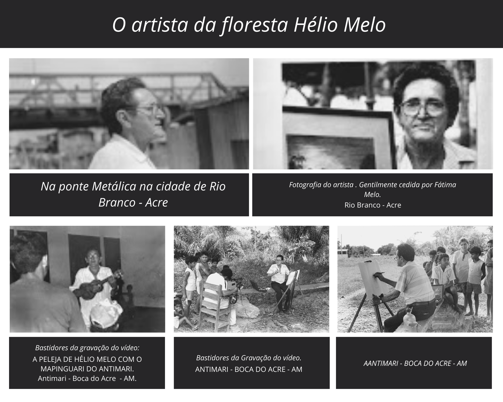
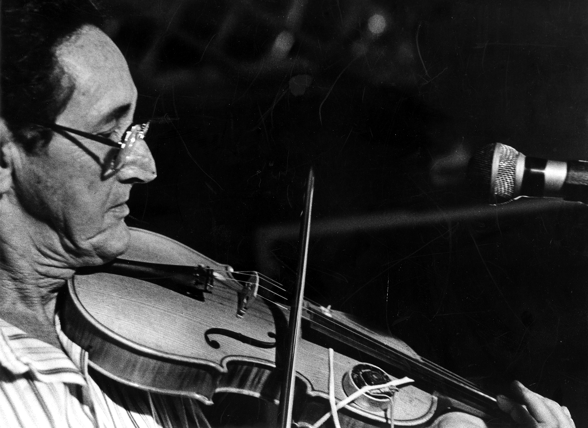
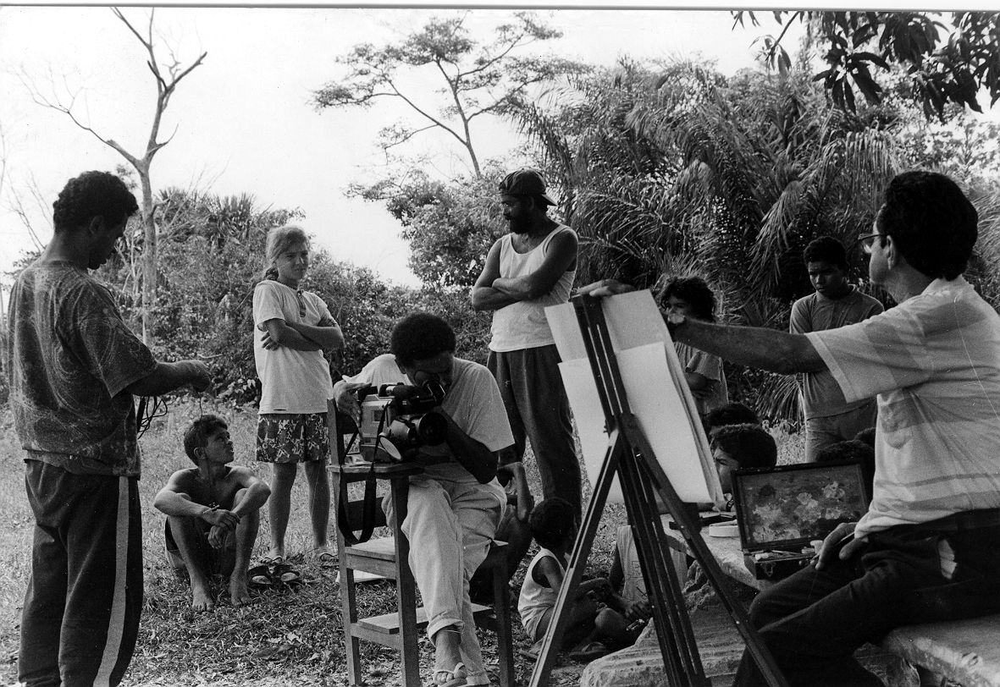
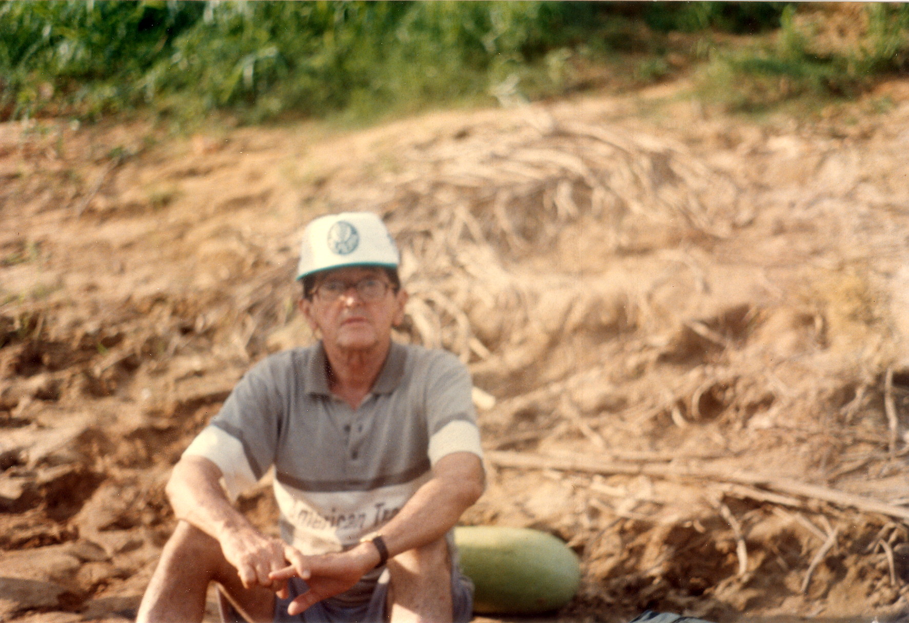
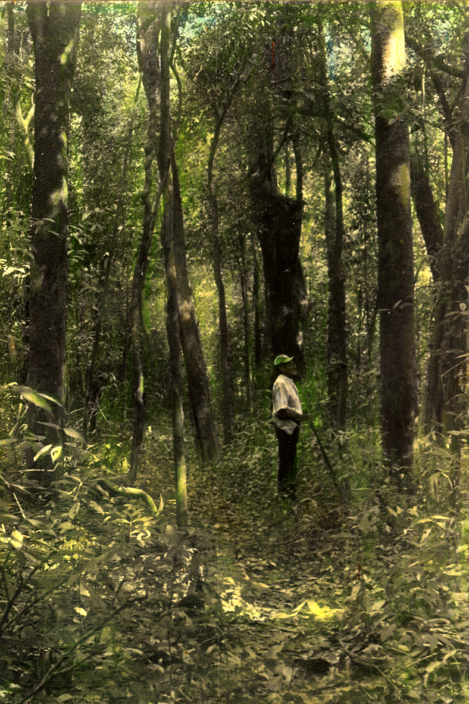
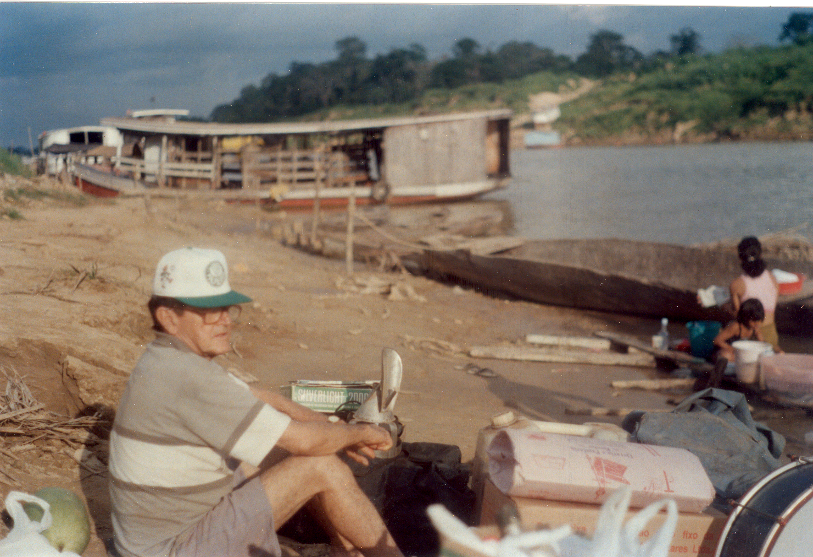

Galeria de Fotos
Vídeo 9 -WEBINÁRIO HÉLIO MELO VIVE! Dia 18 de julho, com Fátima Melo e Karla Kristina Martins. comemoartivas dos 94 anos de nascimento do artista Hélio Melo.
Este site é baseado na dissertação do Professor Ms. Rossini de Araujo Castro, em celebração dos 94 anos de nascimento do artista Hélio Melo.
Figura 2 - Colagem de fotos do artista Hélio Melo, na gravação do vídeo A PELEJA DE HÉLIO MELO COM O MAPINGUARI DO ANTIMARI
Figura 3 - Hélio Melo tocando violino, 1997.
Figura 4 - Gravação do vídeo A PELEJA DE HÉLIO MELO COM O MAPINGUARI DO ANTIMARI, Antimari, Boca do Acre - AM, 1997.
Figura 5 - Hélio Melo no barranco do rio Antimari, uma pausa para o descanso, antes de descarregar o material de filmagem e mantimentos do barco. Antimari, Boca do Acre-AM, 1997
bFigura 6 - Hélio Melo/b> na floresta do Antimari, 1997.Imagem tratada com filtro fotográfico.
Figura 7 - Expedição à terra natal em 1997. Hélio Melo ás margens do Rio Antimari. Pausa para um descanso antes de descarregar material de filmagem e mantimentos. Fotografia de Danilo de S'Acre.Antimari/Boca do Acre
Figura 8 -Fotografias da expedição à terra natal em 1997. Hélio Melo ás margens do Rio Antimari.Fotografia de Danilo de S'Acre.Antimari/Boca do Acre-AM.
Trajetória do artista Hélio Melo
Vídeo 1 -Fátima Melo no documentário de Juca Badaró: *"Seu Hélio"*.
Vídeo 7 - WEBINÁRIO HÉLIO MELO VIVE! Dia 20 de Julho, com José Roca, Eurilinda Figueiredo e Edmilson Figueiredo. Comemorativa dos 94 anos de nascimento do artista Hélio Melo.
Vídeo 8 - WEBINÁRIO HÉLIO MELO VIVE! Dia 19 de Julho, com Dalmir Ferreira e Adalberto Queiroz. Comemorativa dos 94 anos do nascimento do artista Hélio Melo.
Vídeo 2 - Estação Aquiry III 05 2008 Hélio Melo
Vídeo 5 -Vídeo ao vivo no canal do youtube Quinta do Livro ocorrida no dia 02 de julho de 2020 ás 20:00 com o convidado Prof. Ms. Antônio Xavier de Queiroz sobre os artigos publicados no livro Diálogos Intersisciplinares, organizado pelo Prof. Dr. Norberto Stori.São Paulo-SP.
A trajetória de vida e produção do artista fundamenta-se na comunicação verbal, oral, visual, teatral, com o objetivo de partilhar conhecimentos que advém de sua vivência. O termo “vivência” tem aqui o sentido proposto por Gadamer (1997), que entende a vivência como o conceito entendido pelos filósofos alemães Georg Simmel (apud Gadamer, 1997) e Schleiermarcher (apud Gadamer, 1997): para esses pensadores, o conceito de vivência não está relacionado ao episódio cotidiano da vida, mas sim ao sentido de aventura, que, por singularidade, marca o indivíduo de maneira indelével e traz como resultado um aprendizado ou uma forte lembrança.
A intenção de Seo Hélio ao fazer um inventário do trabalho do seringueiro em sua obra visual e escrita é justamente valorizar os saberes tradicionais que se construiu na relação com o território e no universo simbólico. Assim podemos inferir que o conceito de Educação Ambiental para Hélio Melo não se limita ao “meio ambiente”, mas abrange questões como diminuição da pobreza, justiça social e ambiental, qualidade de vida para os trabalhadores extrativistas, mudança no modelo de desenvolvimento econômico-social da Amazônia e utilização do conceito de construir sem destruir, ou seja, aproveitar os recursos oferecidos pela floresta com uma ocupação sustentável baseado nos princípios de convivência sadia entre homem e natureza.
Hélio Holanda Melo (1926 -2001), que, a despeito de ter nascido na vila amazonense Floriano Peixoto, é considerado um artista acreano. “Seo” Hélio, assim como milhares de seringueiros, foi obrigado a se deslocar para a cidade, aonde, ao chegar, ocupou a periferia social. Já no campo simbólico o artista transitou pelos vários territórios da arte, apropriando-se da linguagem da música, das artes visuais, da literatura e do teatro. Para entender esta questão de deslocamento e mudança de território, é importante lembrar que “Seo” Hélio viveu por 33 anos na floresta e, para exercer a função de seringueiro, teve que aprender a se deslocar na mata, criando estratégias de orientação no espaço/tempo. Sua produção visual, musical, literária e teatral se deu na cidade de Rio Branco, capital do Acre. Mas, como habitualmente dizia, considerava-se um pintor da floresta, pois esta fora sua escola e única inspiração. E, mesmo quando se mudou para a zona urbana em Rio Branco (AC), levou a selva consigo. Costumava dizer que as imagens o perseguiam e tinha a urgência de retratar a mata. Nesta cidade exerceu as funções de catraieiro, atividade que consistia em transportar as pessoas numa canoa com dois remos de um lado ao outro do Rio Acre. Trabalhou também nas funções de barbeiro ambulante e vigia.
Nas décadas de setenta e oitenta do século passado, a pecuária e a agricultura extensivas devastavam a floresta num ritmo alucinado. Como resposta a esta insensatez, o seringueiro-artista Hélio Melo produzia freneticamente paisagens da floresta como que para lembrar que a floresta era finita e deveria ser preservada para o bem comum da humanidade. Para se contrapor à devastação, “Seo” Hélio propunha a vastidão das matas, a diversidade da fauna, à propagação dos valores que aprendera com os índios. Toda sua obra revela a preocupação de registrar a grandeza da floresta e a noção de convivência harmoniosa com a natureza. Desenhou e escreveu sobre as matas, os animais, os mitos e os povos da floresta, sempre tendo a consciência da sustentabilidade econômica dos recursos da selva. Foi um homem teimoso e obstinado em mostrar que é possível preservar o meio ambiente, e este foi seu maior legado. A luz que sai de sua pintura retrata a força que emana da floresta, de um modo de vida que se contrapõe a um espírito de deflorestação regente no passado e que através do trabalho de Hélio Melo começou a ser questionado.
Origem do artista
No seringal Floresta, começou a aprender as primeiras letras e a observar o trabalho de pintura da mãe, que gostava de desenhar sereias. Mas a observação do mundo a sua volta fez com que ele se interessasse em desenhar árvores, embarcações descendo o rio, animais e o cotidiano dos trabalhadores dos seringais. Com pouco recurso de material, costumava receber os raros visitantes mostrando-lhes seus desenhos coloridos com sumos de folhas que extraía da floresta.
Em entrevista a Cristina Leite, na revista Outras Palavras, o artista revela que descobriu sua vocação artística aos oito anos de idade ao tentar rabiscar com lápis em folhas de papel. Foi então que recebeu o incentivo dos pais e, a partir desse momento, passou a acreditar que tinha talento para a pintura.
“Meus pais admiravam o trabalho e diziam que eu tinha a tendência para ser pintor.” (Leite, 1999, on-line).
Para sustentar sua família, Seo Hélio procurou ajuda de conhecidos e conseguiu uma vaga temporária de catraieiro no departamento de transporte fluvial, ligado à autoridade da Marinha. No vídeo “A peleja de Hélio Melo com o Mapinguari do Antimari”, ele revela que remou dois anos sem os documentos com a permissão do agente da Marinha, que se compadeceu de sua situação. Seo Hélio trabalhou onze anos transportando pessoas de um lado ao outro do Rio Acre.
Nesse período organizou um Jornal de Bordo, com a tiragem de um único exemplar, que ele ilustrava e escrevia manualmente, contendo, na maioria das vezes, três páginas, nas quais divulgava as principais notícias sobre o recém-criado Estado do Acre. O exemplar era lido pelos passageiros da catraia toda terça-feira e era passado de mão em mão e, para muitos, era o principal meio de informação ao qual tinham acesso. Seo Hélio transformava fatos interessantes em desenhos que vinham acompanhados de pequeno texto. Este formato possibilitava uma leitura rápida e aqueles que não sabiam ler aproveitavam os desenhos para se informar sobre determinado assunto. Os desenhos tinham uma característica de charge, e muitos mantiveram esta característica– uma crônica do cotidiano em forma de desenho. O jornal teve 30 edições e foi uma experiência que seu Hélio classificou de divertida:
"Nas horas de folga desenhava algumas histórias de companheiros de profissão, enfocando fatos pitorescos, como por exemplo a do homem que atravessava seu cavalo nas embarcações e somente queria pagar uma passagem, ou da mulher bonita que por o catraieiro lhe dirigir algumas pilhérias negava-se a pagar a passagem ou mesmo ‘alguma briguinha que surgia entre os catraieiros"(MARCÍLIO, 1985).
Devido a inauguração da ponte metálica Juscelino Kubitschek, em 1971, pelo governador Jorge Kalume, Seo Hélio mudou de profissão e passou a cortar cabelo em domicílio. Comprou um kit de corte manual e passou a trabalhar como barbeiro ambulante, atendendo principalmente aos moradores do Bairro da Base, ex-catraeiros, ex-seringueros e toda espécie de gente que ele encontrasse pela frente. Saía com sua bolsa debaixo do braço e só voltava quando adquirisse o suficiente para comprar alimentação para si e sua família.
Com a ajuda de um amigo conseguiu, em 1975. a vaga de vigia noturno na Companhia Industrial de Desenvolvimento do Acre (CODISACRE). Nesta nova função, passou a alimentar a ideia de aproveitar as noites de vigília para treinar seus desenhos, que nunca abandonara - apesar de empenhado na subsistência da família, sempre lhe sobrava um tempinho para desenhar. No bairro em que morava era solicitado por alguns estudantes para ilustrar trabalhos escolares, o que ele fazia de bom grado. No emprego da repartição pública, passava a noite rabiscando papéis, fazendo desenhos de memória da vida dos seringais.
Desenhava a fauna, a flora, a atividade laboriosa do seringueiro. Nesta fase trabalhava somente com nanquim e seus desenhos não eram coloridos. O chefe da seção reclamava que Seo Hélio passava a noite ocupado com seus desenhos em vez de vigiar a empresa, ao que Seo Hélio respondia muito humorado dizendo ser uma tarefa muito cansativa descer a Bandeira Acreana à tardinha e hasteá-la logo cedo. O certo que não havia jeito de demover da cabeça de Seo Hélio da necessidade de aprimorar sua técnica:
"Eu desenhava, pintava e ninguém queria pagar bem pelo meu trabalho, aí então eu dava de presente para meus compadres. Não tenho muita segurança nos meus trabalhos, por isso sempre pensei em fazer um curso. Achava sempre que estava faltando alguma coisa e precisava de técnica. Tinha a ideia, mas não conseguia expressar através de meus quadros com perfeição"(O JORNAL, 1978, p.17).